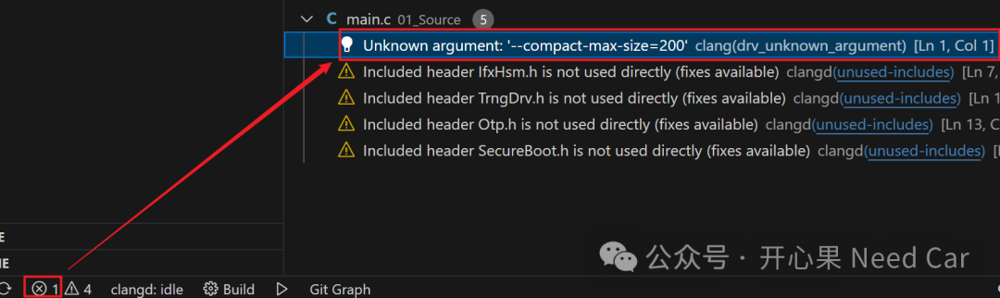
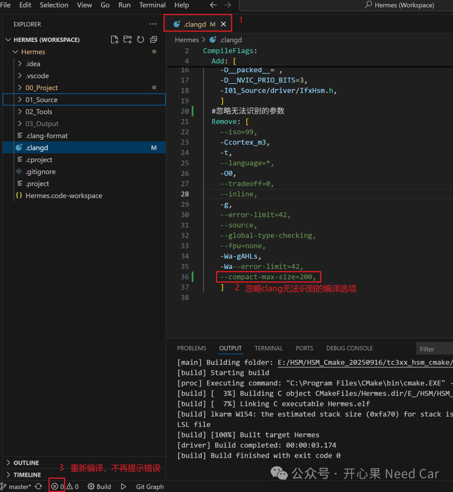
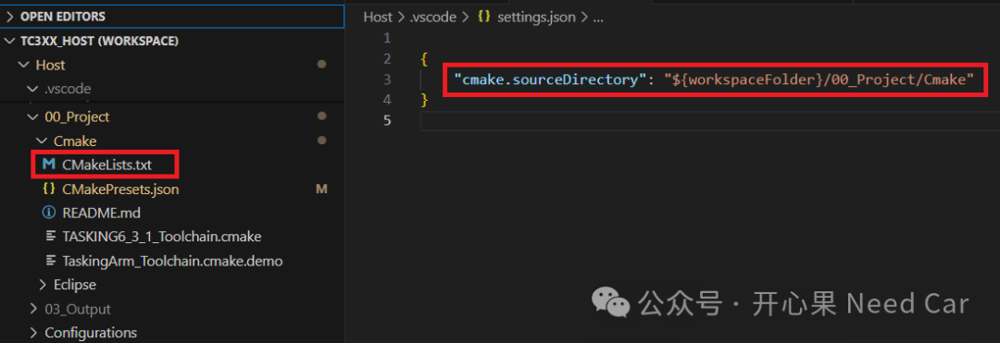
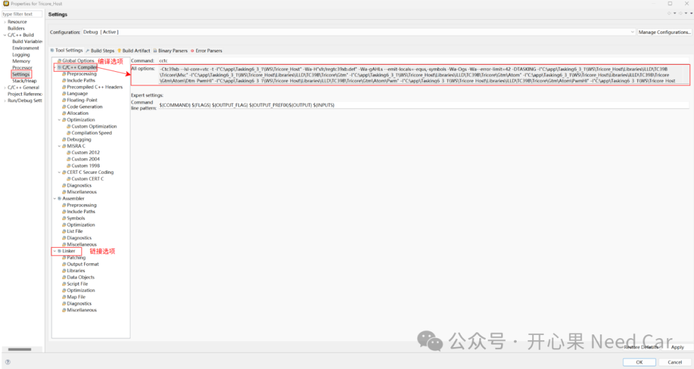
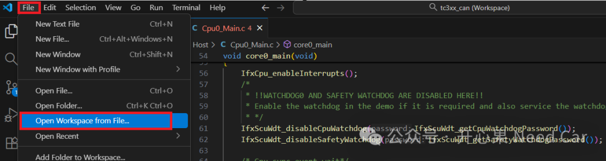

开心果 Need Car · 2025-10-27T06:20:00+08:00 · 微信原文
不少开发的小伙伴切换Clangd（Clangd是一种基于Clang生成的自动化代码分析工具），或许也是因为vscode自带的c/c++插件那一言难尽的功能。除了debug功能，诸如代码补全，跳转等功能实在堵心。至少对我来说，函数跳转的功能如果不准或者不能跳转，实在不能忍受。
1、如何搭建VSCode+Clangd+CMake
如何搭建VSCode+Clangd+CMake，网上可参考的资料很多，大家可以根据自己的情况甄别，如下链接是一个参考：
https://www.cnblogs.com/yuzujr/p/18530675
2、解决Clangd “Unknown argument”错误提示
针对特定的项目，我们往往会指定项目特定的编译器。而这可能存在 Clangd无法解析的命令参数（如 --compact-max-size=200）。这是因为CMake使用的编译器（比如：Tasking）的有些参数clang并不支持。
提示：Clang与GCC一样，同属于编译器套件
（一）问题现象
在VScode中，编译时，提示 “Unknown argument”错误，示意如下：

（二）解决措施
关于解决措施，本文参考如下链接的第二种解决方案。即:在.clangd文件中忽略clang无法识别的编译器选项（比如：本文项目的编译器是Tasking）。参考链接：
https://blog.csdn.net/u011533476/article/details/132050594

# .clangd CompileFlags: CompilationDatabase: "03_Output/Debug" Add: [ -D__size_t=unsigned long, -m32, -U__cplusplus, -D__TASKING__, -D__STATIC_INLINE=inline, -D__disable_irq();= , -D__enable_irq();= , -DT_UINT32=T_UINT32, -DT_UINT16_WRITE=T_UINT16_WRITE, -DT_UINT16_READ=T_UINT16_READ, -DT_UINT32_WRITE=T_UINT32_WRITE, -DT_UINT32_READ=T_UINT32_READ, -D__PACKED_STRUCT=struct, -D__packed__= , -D__NVIC_PRIO_BITS=3, -I/C:/app/Tasking6_3_1/install/ctc/include ] Remove: [ -Ctc39xb, --lsl-core=vtc, "--emit-locals=-equs,-symbols", --switch=auto, --align=0, --default-near-size=8, --default-a0-size=0, --default-a1-size=0, --tradeoff=4, --compact-max-size=200, --error-limit=42, --source, --fp-model=3, --iso=99, "--language=-gcc,-volatile,+strings,-kanji", ] Diagnostics: UnusedIncludes: None |
https://onlinegdb.com/E4CJ3hNsZz

https://onlinegdb.com/tSOTEhdUV3

本文使用Unix Makefiles作为CMake构建系统的生成器。CMakePresets.json编写可以参考如下链接：
https://onlinegdb.com/CYHdQ69Lw
（五）TASKING6_3_1_Toolchain.cmake编写
TASKING6_3_1_Toolchain.cmake编写可以参考如下链接：
https://onlinegdb.com/ykKK-iMC3v
（六）CMake系统构建生成器&make工具安装
Ninja和Unix Makefiles是CMake支持的两种构建系统生成器，虽然Ninja构建速度快，但是，个人感觉容易出问题，比如：FindFirstFileExA在Windows系统上不能很好的解析路径，问题示意如下：
[build] ninja: error: FindFirstFileExA("C:/Code/HSM/tc3xx_hsm_cmake/01_Source/app/secure_boot): The filename, directory name, or volume label syntax is incorrect.
而同样的文本，Unix Makefiles构建时就没有问题。使用Unix Makefiles 构建时，需要安装make工具，make下载路径如下所示：
https://sourceforge.net/projects/gnuwin32/
(七)VSCode工作区配置文件(*.code-workspace)编写
本文的VSCode工作区设置的配置文件为tc3xx_can.code-workspace,内容链接:
https://onlinegdb.com/DpoZBSvnH
打开VSCode工作区配置文件操作如下:
File->Open Workspace from File...->tc3xx_can.code-workspace。

往期精彩回顾